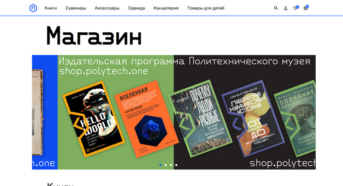
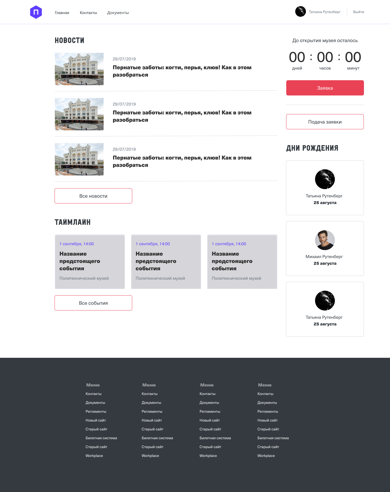
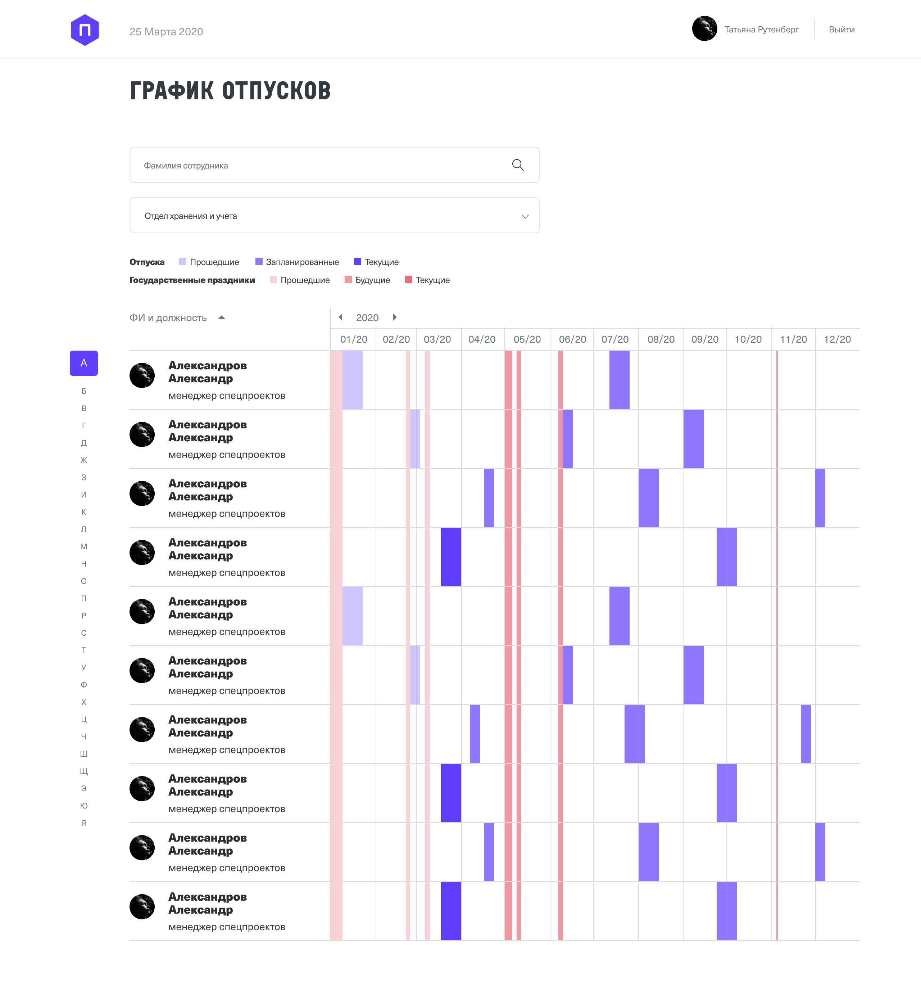
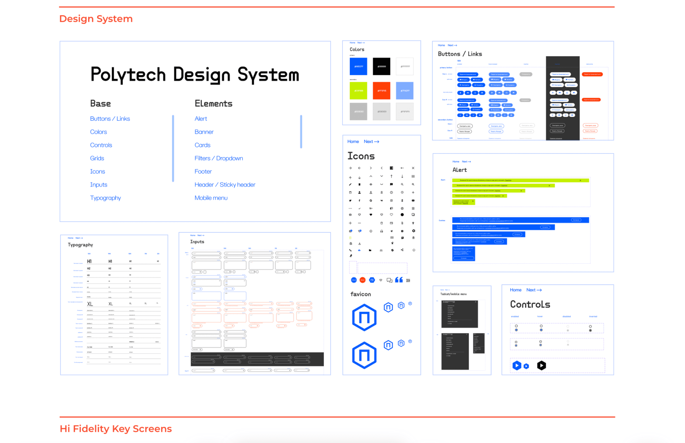
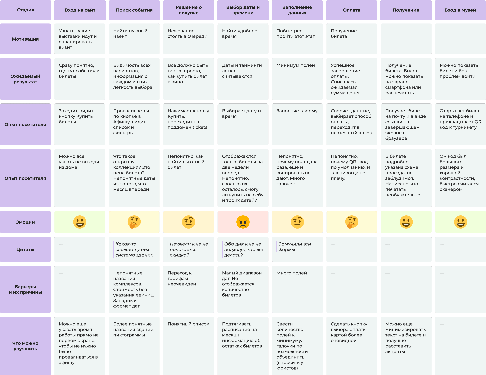
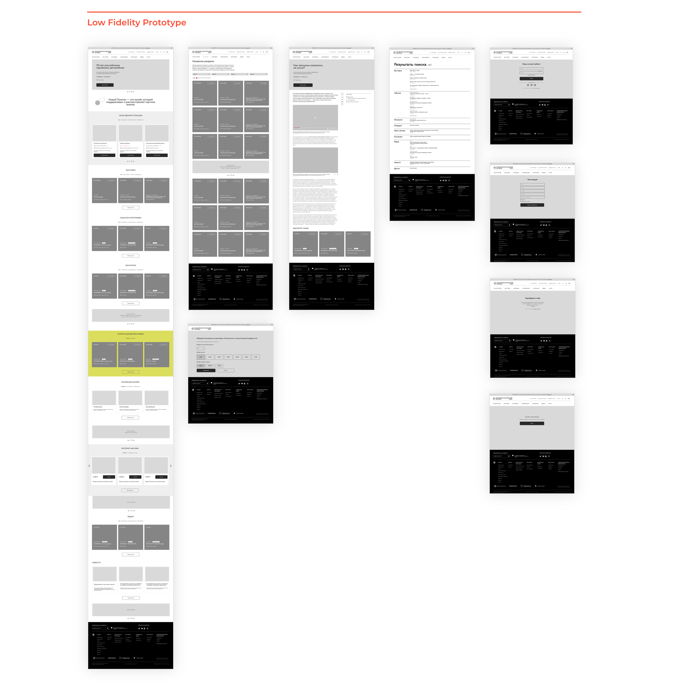
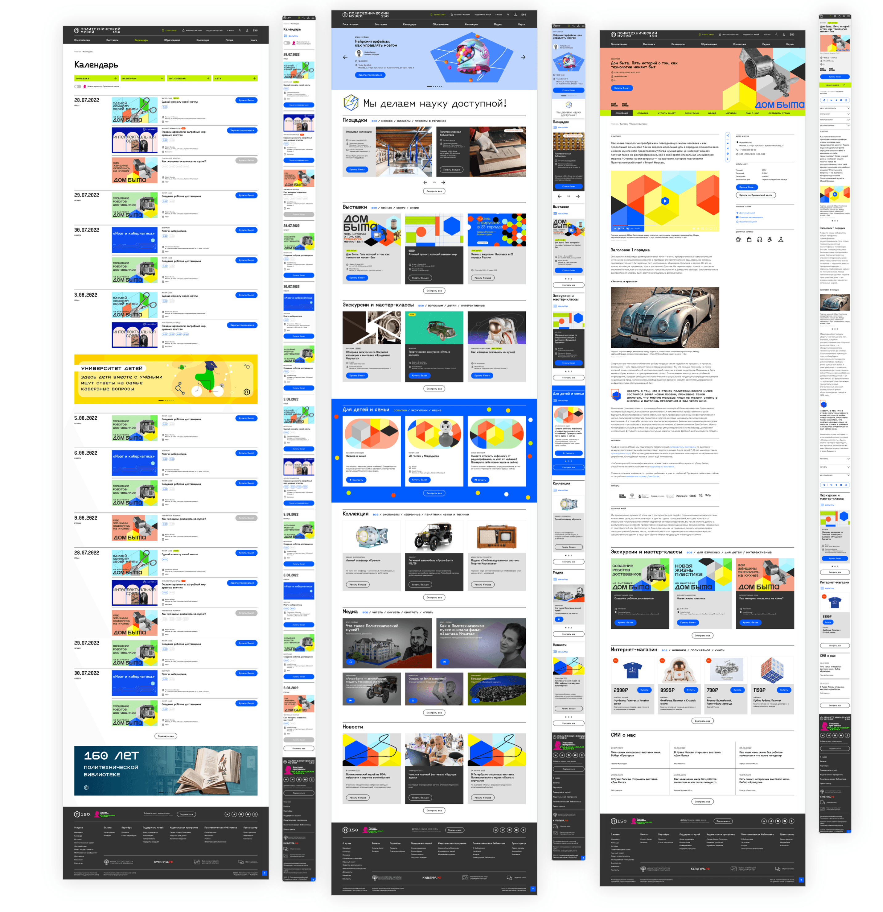
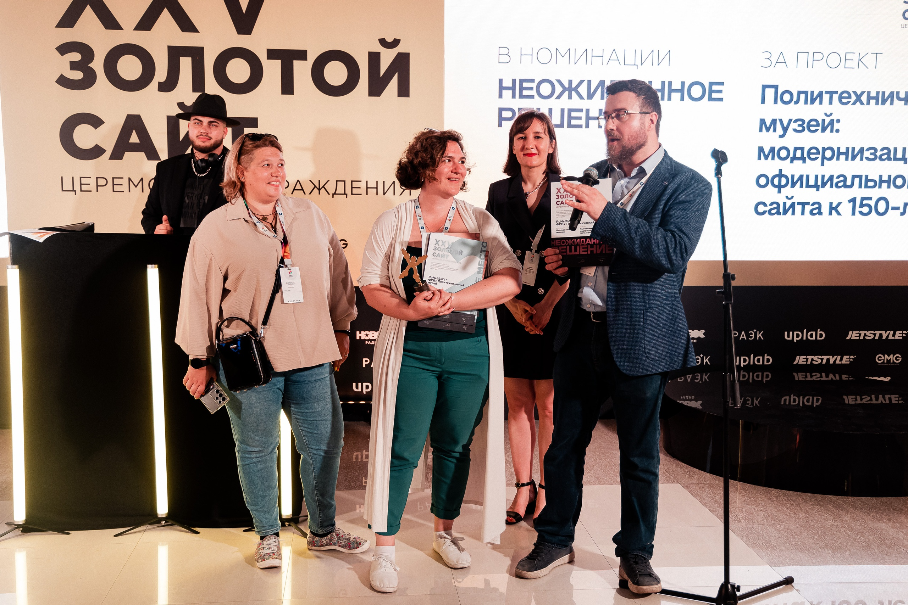

03 Экосистема Политехнического музея
Роль Team Lead команды продуктового дизайна из 5 человек
Инструменты Trello, Figma, Miro
Награды Золотой сайт (в 5 номинациях)
Годы запуска 2021-2024
Проблема Политехнический музей — один из старейших мировых музеев науки и технологий — переживает глобальные изменения. Реконструируется основное здание в сердце Москвы, а вместе с ним меняется сама концепция Политеха: теперь это не просто коллекция экспонатов, а открытая площадка для научных дискуссий и творческих экспериментов. Пока основное здание музея реконструировали, команда развивала цифровые сервисы для посетителей и сотрудников. В кейс вошли интернет-магазин книг и мерча, CRM для работы с аудиторией, корпоративный портал, официальный сайт.

5 призовых мест в старейшем конкурсе Рунета «Золотой сайт»
5 призовых мест в старейшем конкурсе Рунета «Золотой сайт»
Интернет-магазин
Проблема
Музею нужна была отдельная площадка для продажи книг собственной издательской программы.
Решение
Я руководила проектированием магазина. Команда описала сценарии покупателей и собрала адаптивные интерфейсы на основе дизайн-концепции и UI-кита.
Есть что почитать?

CRM
Проблема
Отсутствие системности в коммуникациях с посетителями и экспертами, сборе статистики по сайту и соцсетям и хранении внутренних информационных баз.
Решение
Мы спроектировали CRM, включающую в себя сегментацию и рассылки, базы событий, грантов и экспертов, статистику сайта, соцсетей и колл-центра. Проверили прототип на сотрудниках одного отдела и доработали по обратной связи.

Корпоративный портал
Проблема
Сотрудникам было сложно найти нужную информацию и освоиться в первые дни работы.
Решение
Мы спроектировали портал “Дом Политеха”: витрину сервисов, оргструктуру с профилями, онбординг, новости и бронирование отпуска и переговорных.


Дизайн-система
Что вошло в систему
С арт-директором задали визуальную концепцию. Команда разработала модульную систему для сайта: цвет, типографику, сетки и иконки, а также кнопки, ссылки, формы, уведомления, баннеры и навигацию. Общие компоненты использовали в ключевых сценариях и адаптивах. Система разделяет основы и компоненты. Основы задают визуальные правила, а компоненты дают команде готовые элементы для сборки новых страниц.
Как я вела работу
Я собрала первые компоненты вместе с командой, обучила дизайнеров работе с системой, проводила дизайн-ревью и защищала решения перед стейкхолдерами. Для разработчиков и редакторов мы подготовили гайдлайны. По данным кейса, модульный подход сократил время правок на 50–60% и ускорил сборку промостраниц.

Официальный сайт
В период реконструкции Политех становился открытой площадкой для науки и культуры. Старый сайт рассказывал о музее, но плохо помогал выбрать мероприятие и купить билет. Мы спроектировали основной онлайн-ресурс для посетителей и редакторов. Задача команды — упростить покупку билетов, привлечь новых посетителей и дать музею площадку для публикации материалов о коллекциях и событиях.
Перейти на сайт Политеха


Проектирование
- Требования и структура
— CJM (Customer Journey Map) – путь пользователя от входа на сайт до покупки
— User Stories (например, «Как посетитель ищет мероприятия для детей»)
— Участие в создании Roadmap вместе с PM (Exсel)
— Информационная архитектура: карта сайта (Miro)
— Вайрфреймы (Figma): основные страницы, сценарий покупки билета, тестирование
на 5 пользователях
→ Моя роль: сбор информации, работа руками, воркшопы с PM
- Визуальный дизайн и создание прототипа
— Разработка визуальной концепции совместно с арт-директором
— Создание дизайн-системы и обучение дизайнеров использованию компонентов
— Разработка финальных макетов командой дизайнеров
— Согласование макетов с руководством разного уровня
— Создание гайдлайнов для редакторов и разработчиков
→ Моя роль как лида команды дизайна и этапы работы:
- работа руками над первыми макетами и компонентами дизайн-системы;
- распределение фронта работ между 5 дизайнерами, обучение работе с компонентами, построение процессов;
- ежедневно – разбор бэклога, дизайн-ревью внутри команды, еженедельно – отчет о результатах работы команды и защита дизайн-решений перед стейкхолдерами;
- в конце – создание гайдлайнов.
- Тестирование и передача в разработку
— Юзабилити-тесты прототипа на 5 пользователях
— Доступность (WCAG): проверка контраста, читаемости шрифтов ( Figma-плагин Stark)
— Тест на скорости: оптимизация изображений (Google Lighthouse)
— Взаимодействие с разработчиками и контроль качества реализации
→ Моя роль: работа с плагинами, вводный инструктаж для разработчиков, контроль верстки
- Запуск и поддержка
— Сбор метрик после запуска: конверсия на покупку билетов, retention, время на сайте (Google Analytics)
— Работа с результатами обратной связи от пользователей, UI-фиксы
→ Моя роль: сбор информации, постановка задач команде, ревью и согласование результатов
CJM

Wireframes

Hi-Fi Screens

Перейти на сайт Политеха
Результаты
Поскольку основное здание все еще закрыто на реставрацию и музей функционирует в ограниченном режиме и показывает лишь часть коллекции на других площадках, собирать окончательные метрики еще рано. Но некоторые предварительные подсчеты и выводы уже есть.
- Улучшение пользовательского опыта
— Сокращение времени, которое пользователь тратит на поиск нужного события и покупку билета с 4,5 до 1,2 минут за счет улучшенной навигации и фильтрации мероприятий
— Рост онлайн-продаж на 200%
— Увеличение мобильного трафика на 65%
— Повышение лояльности посетителей по результатам опросов в соцсетях
— Уменьшение количества обращений в поддержку
- Расширение функционала и привлечение новых пользователей
— Рост интереса к подпискам после добавления интерфейса выбора интересующих категорий
— Увеличение аудитории сайта и рост онлайн-продаж вследствие разработки версии для слабовидящих
— Увеличение потока посетителей и уменьшение количества обращений в поддержку после добавления подробных гайдов для разных категорий пользователей: школьные группы, волонтеры, льготники, посетители с ограничениями мобильности
— БОльшая и глубина просмотров вследствие добавления новых фич, работающих на вовлеченность: раздел Медиа с видео, подкастами, играми и журналом, новый интерфейс онлайн-версии каталога Политехнической библиотеки с возможностью заказать книгу, не выходя из дома
— Больше пользы для коллекции с добавлением возможности внести донат или передать экспонат
- Поддержка бренда
— Сайт отвечает современным требованиям юзабилити и отражает новую философию музея, что благоприятно сказывается на имидже учреждения
— Создана новая админка для редакторов, позволяющая оперативно менять наполнение и поддерживать интерес пользователей
— Внедрена модульная дизайн-система, что сокращает время правок на 50-60% и позволяет быстрее проектировать промолендинги и сайты для сайд-проектов музея
На Российском интернет-форуме новый сайт Политехнического музея получил награды в пяти номинациях XXV конкурса «Золотой сайт»:
- Лучший сайт некоммерческой или благотворительной организации— 2 место
- Сайт объекта культуры, концерта, выставки— 3 место
- Сервис, культурно-архитектурный городской проект— 2 место
- Лучший сайт социального проекта— 3 место
- Неожиданное решение— Специальный приз
